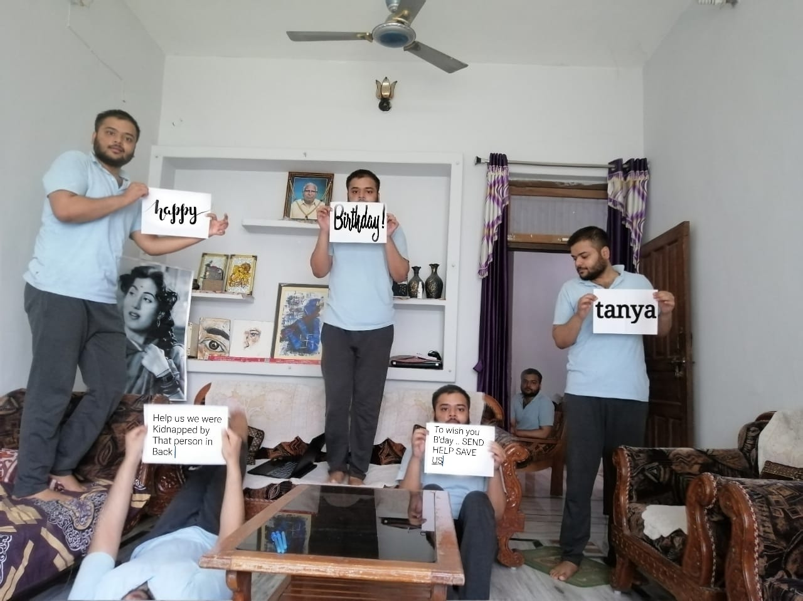

are the friends with most different yet most similar personality and traits.
You like to take bath everyday and cant use anyone else's blanket. Meanwhile when i take a bath once in a month then i dont even bother to grab my towel ar bas jo sbse paas hoti le lete..
but we both love same dishes{except chane ki sbji lol.}
we both think the same way..actually over think the same way..haha..
our views on other people are often ekdum same ..haha..
we both want each other to get more mota ahaha..
and ham dono hi h bas jo ek doosre ki bkvaas jhel skte haaha truuee..
but difference ar bhi h jese i tend to panic quickly in emotional things..you know how to control yourself.. chlo so you get an idea..we met unexpectedly.. everything just happened but never expected..but one thing will never ever change..ki MAGGIE me aloo bhut bekar lgti h..
